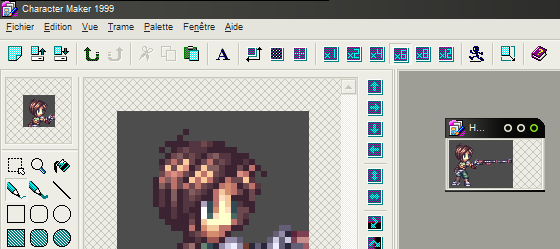
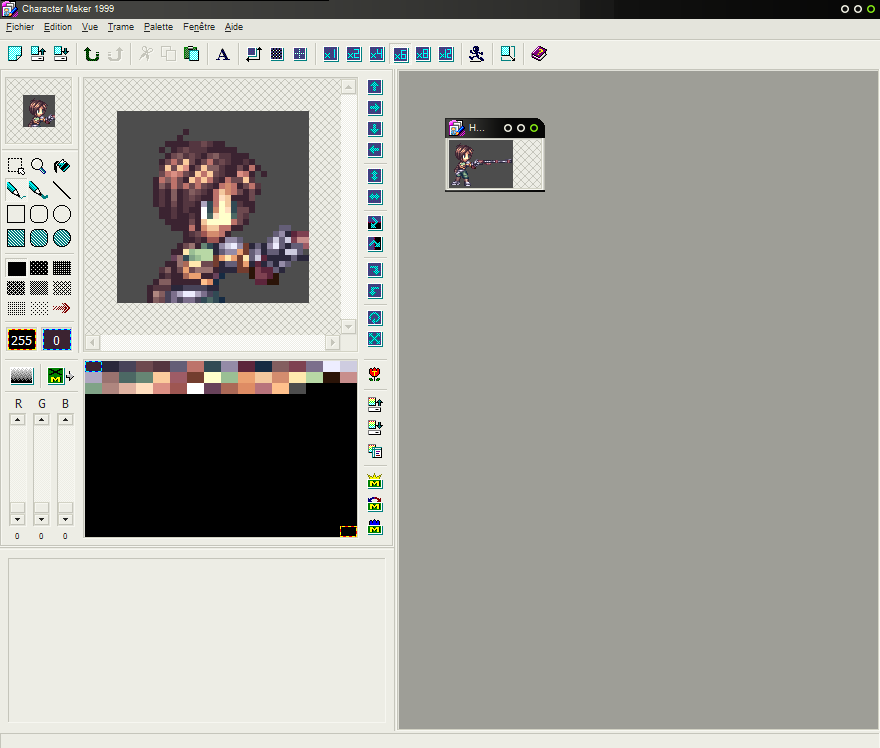
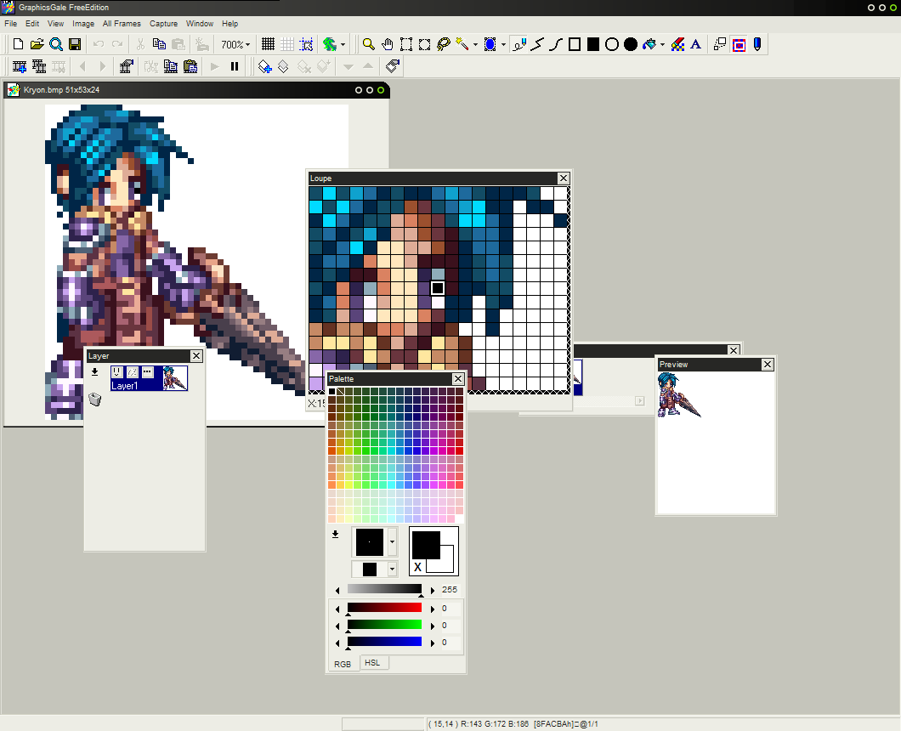
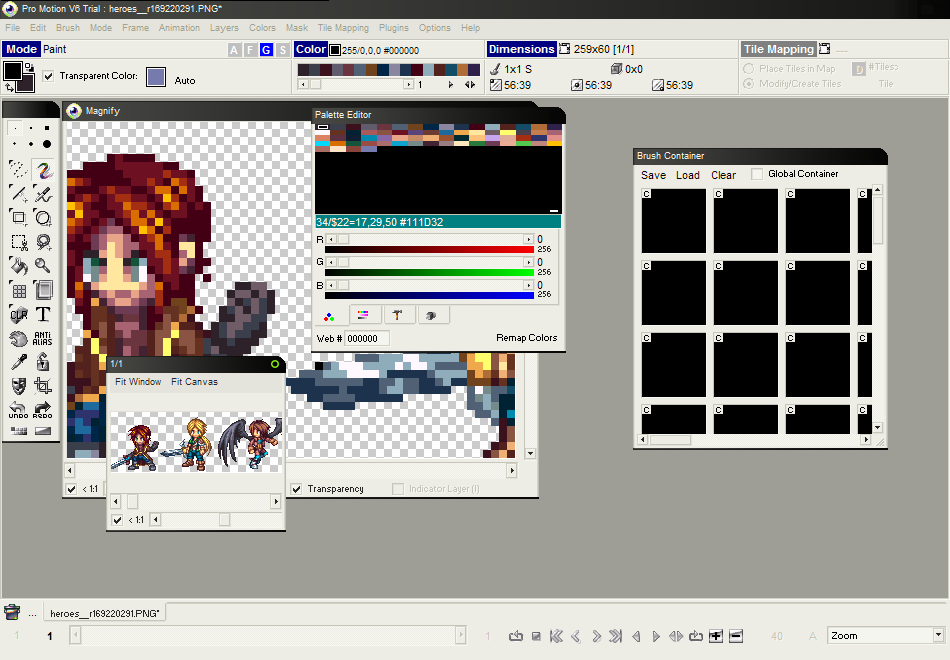

Cours de pixel art 2 : les bons outils
S'il y a bien un proverbe que je déteste c'est :
Il n'y a pas de mauvais outils, seulement de mauvais ouvriers.

Je crois même qu'il n'y a rien de plus faux (sauf peut-être que « tout ce qui ne tue pas rend plus fort » mais c'est pas le sujet) et le pixel art en est une très bonne preuve. Ce chapitre a pour but de vous présenter différents logiciels qui permettent de faire du pixel art et de vous aider à choisir celui qui vous conviendra le mieux.
Tout pourri.
Au moment de choisir son logiciel pour faire du pixel art, ce qu'on pense le plus souvent c'est :
Hein ? ben on s'en fout non ? Pour faire du pixel art il faut juste Paint.
Tragique erreur : je parlais de mauvais outils, en voilà un.
Paint a un avantage (et un seul) : vous l'avez déjà si vous êtes sous Windows. Par contre, il a des inconvénients à la pelle et en voici une liste (non exhaustive) :
- On ne peut ouvrir qu'un fichier à la fois.
- Pas de gestion de palette (remplacement de teintes, modification appliquées à plusieurs couleurs).
- Pas de calques.
- Pas de transparence.
- Pas de sélections autres que rectangulaire et elliptiques (ha ha).
- Peu de raccourcis claviers.
- Ergonomie catastrophique.
Bref, Paint vous pouvez oublier. Maintenant on attaque les vrais logiciels.
Éventuellement…
Ce qu'on pense ensuite souvent c'est :
Bon ok, Paint c'est bien trop limité pour moi, alors je vais utiliser mon ami Photoshop (ou PaintShopPro ou The Gimp, ça revient au même) qui a mille fois plus de possibilités.
Cela peut-être une bonne ou une mauvaise idée : si vous savez déjà bien maîtriser l'un de ces logiciels, vous pouvez faire du pixel art avec (en désactivant toutes les options d'anti-aliasing automatique et en vous privant d'une bonne partie des fonctions évidemment). Si en revanche vous ne savez vous servir d'aucun de ces logiciels, vous passeriez beaucoup de temps à apprendre comment ils fonctionnent alors que vous n'avez pas besoin de toutes les options qu'ils proposent et ce serait une énorme perte de temps.
Pour faire court, si vous utilisez déjà Photoshop/PSP depuis longtemps, vous pouvez faire votre pixel art avec (j'utilise personnellement Photoshop par habitude), mais dans le cas contraire, mieux vaut utiliser un logiciel spécialisé dans le pixel art. Car oui, ça existe.
Le top du top.
Les logiciels dédiés au pixel art sont plus nombreux qu'on pourrait le penser mais nous ne retiendrons ici que ceux que nous jugeons les meilleurs. Ils ont tous des fonctionnalités très semblables (gestion efficace de palette, possibilité de prévisualiser ce que donnerait un tile mis bout à bout plusieurs fois, gestion de la transparence, gestion des calques, etc.). Toute la différence se situe dans l'ergonomie… et dans le prix.
Charamaker 1999
Charamaker 1999 a un gros avantage pour l'internaute pressé que vous êtes : la distribution officielle semble arrêtée depuis très longtemps et on peut le trouver en téléchargement direct aux quatre coins de la toile. La légalité du procédé n'étant pas très claire, nous vous laissons le soin de le trouver vous même (via Google par exemple).

Graphicsgale
De mon côté, je trouve l'interface de Graphicsgale beaucoup plus lisible et bien plus pratique. Néanmoins, ceci a un prix (12€).
Cela dit, ça reste très abordable. De plus, la version d'essai comporte absolument toutes les options nécessaires pour faire des graphismes de jeux. La seule fonction absente de cette version est la gestion des images en .gif mais ce n'est pas du tout un problème puisque le format .png lui est préférable. Par ailleurs, cette version d'essai n'est pas limitée dans le temps et est donc tout à fait utilisable à long terme.

Vous pouvez télécharger la version d'essai depuis le site officiel.
Pro-Motion
Le logiciel le plus souvent utilisé par les pixel artistes professionnels est Pro-Motion qui est (à ce qu'il parait) plus ergonomique et plus rapide que Graphicsgale. Ah oui, il coûte cher ! Vous pourrez vous procurer la version complète pour la modique somme de …50€ (78$).

Vous pouvez télécharger la version d'essai depuis le site officiel.
Pixen
N'oublions pas les malheureux utilisateurs de MacOS. Pixen est un logiciel open source de la même trempe que les précédents et il a le mérite d'être gratuit, même si son développement est un peu chaotique. Je ne peux malheureusement pas vous en dire plus puisque je n'ai pas de Mac : si ça vous intéresse, vous pouvez le retrouver sur GitHub.
Je vous recommande vivement de les essayer tous grâce aux versions de démonstration et de faire quelques essais dessus afin de voir lequel vous convient le mieux en termes d'ergonomie. Essentiellement, on peut dire qu'ils se valent et qu'il s'agit simplement d'une question de goûts. Sachez toutefois qu'une fois habitué à un logiciel, il vous sera très difficile d'en changer.
Ajouter un commentaire
Commentaires

Pour ceux qui ne veulent pas acheter Aseprite, il existe LibreSprite (Windows/Linux/Mac), qui est un fork de Aseprite avant qu'il ne devienne payant.
https://libresprite.github.io/
Il possède toutes les fonctionnalités pour le pixel art et reste très accessible. ^^
Perso, j'utilise Aseprite, il est pas cher et dispose d'une version gratuite.
Il n'a pas d'outils en trop complétement inutiles et comporte tous les points des logiciels précédents.
css
Si vous ne voulez pas vous embêter à chercher Charamaker, ne voulez pas acheter Graphicscale ou ne voulez pas vous embêter avec les outils inutiles et le prix excessif de Pro-Motion,
Aseprite est parfait pour vous !
Aseprite est un bon logiciel aussi, il a un petit prix(une vingtaine d'euros) et on ne s'ennuie pas avec pleins de fonctionnalités inutiles ^^
Quelqu'un sait-t'il comment faire sur paint ? Merci !
Salut, Merci pour ce tuto! Il va me permettre de beaucoup m'améliorer!
Pour ma part, je fais mes débuts sur Piksel. Je ne sais pas ce que vous en pensez, mais il a le mérite d'être facile à utiliser pour un néophyte comme moi qui n'est pas graphiste.
bonjour j'ai fait l'acquisition de pro-motion mais je dois avouez qu'il manque enormément de tuto débutant sur le net. Je le déconseil donc pour une première approche.
Pour les .gif, c'est pas très grave :
Si vous possédez un logiciel comme GIF Movie Gear, pas de problème.
Enregistrez toutes vos images en .png et faites l'anim' avec GMG !
Photofiltre peut-il convenir?
trop cool <3
Ya aussi paint.net qui ai plutot de tres bonne qualiter sait comme paint mes 100 foit mieux avec la transparence et possibilité ajouter des plugin :)
Sur mac je conseille vivement Aseprite , toujours en développement mais prometteur . Il est aussi dispo sur les autres plate-formes.
Sur android il y a isopix qui est pas mal! (vous pouvez trouvee la vertion complète sur 4share et aptoid
Woah! merci franchement j'adore ça m'aide beaucoup! serait il possible de me montrer les différentes alternatives de manga studio? j'en ait vraiment besoin! merci d'avance
Pour ma part j'utilise Paint.Net et Pixlr (online) qui sont tous deux gratuits et offrent toutes les fonctionnalités dont on a besoin pour le pixel art : transparence, calques, sélections avancées, … etc
Au passage, ce site est absolument parfait ! Vous faites du bon boulot. Merci !
- nakwada
J'ai découvert Pixia récemment ! testez le !
J'utilise grafx2, opensource, avec beaucoup de plaisir !
Sa ne marche pas… Il y a bien écrit " effet de transparence " dessus, mais quand je clique sur le dessin ça n'as absolument aucun effet.
Sinon oui, j'ai eu des problème de connexion hier, mais seulement quand je me connectais, quand je me déconnectais… Magie ! Tout remarche. :) Et quand je me reconnectais.. Magie ! Rien de marche. :D

pour la remarque sur paint : "On ne peut ouvrir qu'un fichier à la fois" => en effet mais on peut ouvrir plusieurs paint à la fois, ce qui revient au même. Cela dit c'est de la merde en boite hein. On apprend a programmer des trucs 10 fois mieux en deux secondes dans mon école.

Je ne suis pas utilisateur de Charamaker mais je crois que c'est l'icône avec la tulipe rouge marquée T (comme transparent) qu'il faut utiliser.
Complètement hors-sujet, je suppose que tu es l'utilisateur qui a rencontré vers minuit vingt des erreurs sur le site (j'en suis sur en fait). Le bug responsable de ça a été corrigé, toutes mes excuses pour le désagrément.
Bonjour !
Voilà, je débute en Pixel-Art, et je fais quelque petits smiley animés, mais pour les mettre sur forums, il reste un problème : le fond. Alors j'aimerais savoir, sur CharaMaker, comment mettre du " vide ", en gros, appliquer de la même manière qu'un couleur aucune couleur, pour que ça s'adapte sur tout les fond. Si c'est impossible sur charaMaker, pouvez m'indiquez un logiciel gratuit le permettant et simple d'utilisation ? Merci !
Paint c'est nul, mais Paint.net ça se rapproche de Photoshop : http://www.paint.net/ (gratuit)
--Yarflam
L'éditeur de Game Maker (à partir de la version 8) est également très bien.
http://www.yoyogames.com/gamemaker
Pour le pixel art, vous n'avez besoin que de la version lite.
--l0lmanPH
Je recommande également mtpaint, un logiciel opensource et léger qui est particulièrement adapté pour faire du pixel art. Jason Rohrer, un créateur prolifique de jeux, utilise ce logiciel justement.
--farvardin